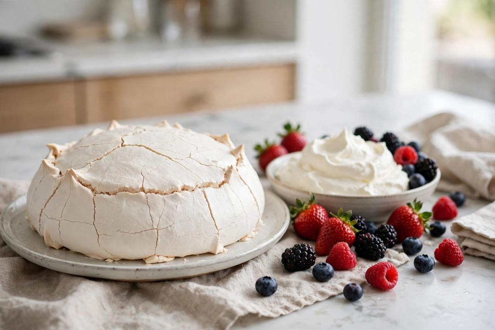

Cracked Pavlova Rescue and Cover-Ups: Triage by Crack, Dress by the Clock

The pavlova cracked. Now what? Before reaching for the cream, which is where every other rescue page starts and stops, answer one question: how cracked is it? A hairline crack and a full collapse are both called a cracked pavlova, and they need opposite handling. One wants a generous blanket of cream. The other wants a smaller amount of topping, served with extra on the side, because a landslide of cream on a fragile shell is how a crack becomes a cave in. Sort the damage first. The cover up follows from the sort.
The facts line
| Item | The working numbers |
|---|---|
| The shell | Can be made 2 days ahead and kept in a well sealed airtight container at room temperature |
| The dressing | As close to serving as possible, and no more than about 1 hour ahead |
| On the table | A topped pavlova should not sit outside the fridge for more than 2 hours |
| The sugar test | Meringue rubbed between fingertips feels smooth when the sugar is dissolved, grainy when it is not |
| The base ratio | About 1/4 cup (55 g) caster sugar per egg white, based on 60 g eggs |
The severity table: five problems, five handlings
| What you see | Severity | The handling |
|---|---|---|
| Hairline cracks across the top | Cosmetic | Serve it proudly. Some cracking is normal, and the cracks disappear under cream and fruit |
| Deep splits, shell in leaning sections | Structural but standing | Go easy on the topping, cover the splits, and serve extra cream and fruit on the side |
| Sunk or collapsed centre | Finished as a pavlova | It cannot be un-collapsed. Cover most of it with cream and berries and serve it rustic, or take the Eton mess exit below |
| Base stuck fast to the baking paper | Underbaked base | Cut around the paper and move the pavlova to the serving plate still sitting on its paper |
| Syrup beads on the surface or liquid at the base | Weeping | Pat the damp spots dry first, then dress and serve promptly |
Notice what the table does not say. It does not say drown everything in cream. Cream is the right answer for exactly two of the five rows, a supporting actor in two more, and no help at all for a shell that is still glued to its paper.
The cover ups, matched to the damage
For hairlines, the classic blanket. Whipped cream spread over the top hides fine cracks completely, and fruit arranged over the cream finishes the disguise. Berries and kiwi are the traditional cover, and their colour does half the distracting work. This is the one case where the standard advice is simply right.
For deep splits, restraint. The test kitchen guidance for severe cracks is specific: take care with the quantity of topping, and consider serving extra topping on the side instead of loading it all on top. A split shell carries less weight than a whole one. Cream in the splits, fruit along the lines of the damage, and a bowl of extra cream beside the plate reads as generosity rather than repair.
For a stuck base, serve the paper. A pavlova that will not release was underbaked underneath, and prying at it converts one problem into crumbs. Cut around the paper, lift the whole thing, paper and all, onto the serving plate, and slice through the shell at the table. Nobody inspects the underside of a dessert that tastes right.
For weeping, blot before you dress. Weeping is syrup escaping the meringue, showing up as beads on the surface or liquid pooling at the base. Pat the damp spots dry, then proceed with cream and fruit as normal, and serve without delay, because a weeping shell does not improve while it waits.
Dress by the clock: the serving day plan
The second half of the rescue is timing, and the sources are unusually precise about it. Work backwards from the moment the pavlova is served.
- Up to 2 days before: bake the shell and store it airtight at room temperature. An undecorated shell can also simply stay in the turned off oven for up to 2 days, which is the lowest effort storage in baking.
- The day of serving: do the triage. Read the severity table, pick the handling, and get the cream and fruit ready. Nothing gets assembled yet.
- Within the last hour: dress the pavlova. Decorating as close to serving as possible is what stops a dressed pavlova caving in under its own topping, and about 1 hour ahead is the outer limit the tested sources use.
- At the table: serve promptly, and keep the 2 hour rule in view. A topped pavlova should not sit outside the fridge longer than that, so leftovers go back into the cold rather than lingering beside the coffee.
The Eton mess exit
Every triage needs a dignified last resort, and pavlova has the best one in desserts. If the shell is very fragile, if the collapse is total, if the pieces outnumber the slices, stop repairing and convert. Break the meringue into generous chunks, portion it into bowls, and layer it with whipped cream and fruit as though that was the plan from the beginning. That dessert has a name, Eton mess, and a long history of being served on purpose. The conversion works because nothing about the flavour failed. Only the architecture did, and architecture is optional in a bowl.
Leftover pavlova in any state gets the same treatment the next day: packed into glasses as a sundae style layered dessert, where cream and fruit hide every crack that survived the first serving.
Next time: the bake and cool schedule that keeps the shell whole
The tested sources disagree on exact temperatures, which looks like an argument until the shared pattern shows itself. One schedule preheats to 150°C (300°F) and drops to 100°C (210°F) for 1.5 hours. Another starts at 130°C (265°F), drops to 95°C (200°F) the moment the pavlova goes in, and bakes 90 minutes. Both do the same three things: a hotter start that sets the outside of the shell, a long low bake that dries the meringue while it stays white, and a complete cool inside the closed, turned off oven, overnight if possible. Opening the door mid bake lets cool air hit the shell, and that shock is a leading cause of both sinking and splitting.
- Start with room temperature whites and a spotless bowl. Room temperature egg whites aerate better than chilled ones, and any trace of fat or yolk stops whites whipping at all. Wipe the bowl and beaters with paper towel dipped in lemon juice or vinegar, and separate eggs one at a time into a small bowl first.
- Add the sugar 1 tablespoon (about 15 g) at a time. Beat until each addition dissolves before adding more. Beating 5 to 6 whites with their sugar takes around 10 minutes in total. Undissolved sugar is the quiet saboteur here: it makes meringue weep during and after baking, and it weakens the shell.
- Run the fingertip test before shaping. Rub a little meringue between your fingertips. Smooth means the sugar is dissolved and the shell has its best chance. Gritty means keep beating, and on a humid day dissolving can take much longer than usual.
- Stop at thick and glossy. Once the sugar is dissolved and the mixture is thick and glossy, it is ready. Beating past that point overbeats the foam, and overbeaten mixture is a named cause of layers collapsing. For tall single layer pavlovas, grooves up the sides help the shell hold itself up while it bakes, and straight ridges support the structure better than smooth sides.
- Bake hot, then low, then leave it alone. Use one of the schedules above, keep the door shut for the entire bake, and let the pavlova cool completely in the oven with the heat off. Patience at this step is the whole prevention programme.
Success looks like this: a shell that feels firm and dry, stays as white as possible, lifts cleanly off its paper, and carries its cream without a sound. A fine crack or two along the way is not a failure state. It is a pavlova, being a pavlova, under cream where nobody will ever know.
— June Callahan, Food Writer